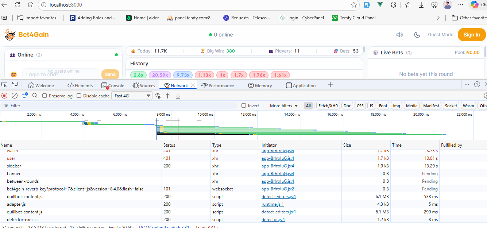

WebSockets
Real-time communication architecture powering game state, chat, and notifications
Overview
Bet4Gain uses Laravel Reverb for server-side WebSocket management and Laravel Echo + Pusher.js on the client side. All game state updates, chat messages, and user notifications are delivered in real-time over persistent WebSocket connections. This ensures every connected player sees the same multiplier, the same bets, and the same crash point simultaneously — with sub-100ms latency.
Architecture
The real-time architecture follows a unidirectional broadcast pattern. The server is the single source of truth — it computes game state, validates bets, and broadcasts events. Clients subscribe to channels and react to incoming events.
Event Flow
The complete flow from server to client:
-
Laravel Event — A PHP event class is
dispatched (e.g.,
GameMultiplierUpdated) -
ShouldBroadcastNow — The event
implements
ShouldBroadcastNowfor instant delivery (no queue delay) - Reverb Server — Laravel's broadcasting system sends the event payload to the Reverb WebSocket server
- Echo Client — Laravel Echo (connected via Pusher.js transport) receives the event on the subscribed channel
- Vue Component — The Vue component's Echo listener updates reactive state, triggering a UI re-render

Channels
Bet4Gain uses five broadcast channels, each serving a distinct purpose:
| Channel | Type | Purpose |
|---|---|---|
game |
Public | Game state broadcasts — multiplier ticks, bet placements, cashouts, round start/end, and crash events. All connected users receive these. |
chat |
Presence | Chat messages and online user tracking. Presence channel excludes banned users and tracks who is currently in the chat room. |
user.{id} |
Private | Personal notifications for a specific user — coin transfers received, system alerts, etc. |
App.Models.User.{id} |
Private | Laravel's default notification channel. Used for database notifications that are also broadcast in real-time. |
online |
Presence | Global online user tracking. Used to display the online user count and list across the platform. |
routes/channels.php. Users must be
authenticated via Sanctum before subscribing to private or
presence channels.
Game Events
These events are broadcast on the game public
channel and drive the entire game experience:
| Event | Payload | Description |
|---|---|---|
GameCountdown |
secondsLeft |
Fired every second during the countdown between rounds. The client displays a countdown timer before the next round begins. |
GameBettingStarted |
round data | Signals the start of the betting phase. Players can now place bets for the upcoming round. |
GameStarted |
round data | The multiplier starts running. Betting is closed; players can only cash out from this point. |
GameMultiplierUpdated |
multiplier, elapsed
|
Fired approximately every 100ms. Updates the current multiplier value and elapsed time. The Canvas animation interpolates between ticks for smooth rendering. |
GameCrashed |
crashPoint, round data |
The round has ended. Displays the final crash point. Any players who did not cash out lose their bet. |
BetPlaced |
bet data | Broadcast when any player places a bet. Updates the live bet list visible to all players. |
BetCashedOut |
bet data, multiplier,
payout
|
Broadcast when a player cashes out. Shows the cashout multiplier and payout in the bet list. |
Chat Events
These events are broadcast on the chat presence
channel:
| Event | Payload | Description |
|---|---|---|
ChatMessageSent |
message data (id, user, message, type, timestamp) | A new chat message has been sent. The client appends it to the chat window and auto-scrolls. |
ChatMessageDeleted |
message id | A message has been deleted by a moderator or admin. The client removes it from the chat window. |
Private Events
These events are broadcast on user-specific private channels
(user.{id}):
| Event | Payload | Description |
|---|---|---|
CoinTransferReceived |
sender, amount,
type, note
|
The authenticated user has received a coin transfer (gift or P2P transfer). A toast notification is shown and the balance is updated in real-time. |
Client Setup
The Echo client is configured in the frontend bootstrap file. It uses the Pusher.js transport protocol to connect to the Reverb WebSocket server:
Echo Configuration (echo.js)
import Echo from 'laravel-echo';
import Pusher from 'pusher-js';
window.Pusher = Pusher;
window.Echo = new Echo({
broadcaster: 'reverb',
key: reverbConfig.key,
wsHost: reverbConfig.host,
wsPort: reverbConfig.port,
wssPort: reverbConfig.port,
forceTLS: reverbConfig.scheme === 'https',
enabledTransports: ['ws', 'wss'],
});
The reverbConfig object is injected from the
server-side Blade template using values from your
.env file. This ensures the client always
connects to the correct Reverb instance.
Subscribing to Channels
Public Channel
Subscribe to game events visible to all users:
// Listen for game state events on the public 'game' channel
window.Echo.channel('game')
.listen('GameCountdown', (e) => {
console.log('Countdown:', e.secondsLeft);
})
.listen('GameStarted', (e) => {
console.log('Round started:', e.round);
})
.listen('GameMultiplierUpdated', (e) => {
console.log('Multiplier:', e.multiplier);
})
.listen('GameCrashed', (e) => {
console.log('Crashed at:', e.crashPoint);
})
.listen('BetPlaced', (e) => {
console.log('Bet placed:', e.bet);
})
.listen('BetCashedOut', (e) => {
console.log('Cashed out:', e.bet, 'at', e.multiplier);
});Private Channel
Subscribe to user-specific notifications (requires authentication):
// Listen for private events on the authenticated user's channel
window.Echo.private(`user.${userId}`)
.listen('CoinTransferReceived', (e) => {
console.log(`Received ${e.amount} coins from ${e.sender.username}`);
// Update balance, show toast notification
});Presence Channel
Subscribe to chat with online user tracking:
// Join the chat presence channel
window.Echo.join('chat')
.here((users) => {
console.log('Users currently online:', users);
})
.joining((user) => {
console.log('User joined:', user.username);
})
.leaving((user) => {
console.log('User left:', user.username);
})
.listen('ChatMessageSent', (e) => {
console.log('New message:', e.message);
})
.listen('ChatMessageDeleted', (e) => {
console.log('Message deleted:', e.messageId);
});Running Reverb
Development
Start the Reverb WebSocket server in the foreground:
php artisan reverb:startWith debug output:
php artisan reverb:start --debugEnvironment Variables
Configure the Reverb server in your .env file:
REVERB_APP_ID=your-app-id
REVERB_APP_KEY=your-app-key
REVERB_APP_SECRET=your-app-secret
REVERB_HOST=0.0.0.0
REVERB_PORT=8080
REVERB_SCHEME=http
VITE_REVERB_APP_KEY="${REVERB_APP_KEY}"
VITE_REVERB_HOST="localhost"
VITE_REVERB_PORT="${REVERB_PORT}"
VITE_REVERB_SCHEME="${REVERB_SCHEME}"Production — Supervisor
In production, use Supervisor to keep the Reverb process running and auto-restart on failure:
[program:reverb]
command=php /var/www/bet4gain/artisan reverb:start
autostart=true
autorestart=true
stopasgroup=true
killasgroup=true
user=www-data
numprocs=1
redirect_stderr=true
stdout_logfile=/var/www/bet4gain/storage/logs/reverb.log
stopwaitsecs=3600REVERB_SCHEME=https and use a reverse proxy
(Nginx) to terminate SSL, forwarding WebSocket connections
to Reverb's internal port.
Debugging
When WebSocket connections aren't working as expected, use these techniques to diagnose issues:
Browser DevTools
- Open browser DevTools (
F12) - Navigate to Network tab
- Filter by WS (WebSocket)
- Click on the WebSocket connection to inspect frames
- Check the Messages sub-tab to see incoming and outgoing frames in real-time

Reverb Logs
Check the Reverb server logs for connection and event issues:
# View Reverb logs in real-time
tail -f storage/logs/reverb.log
# Run Reverb with debug output
php artisan reverb:start --debugCommon Issues
| Symptom | Cause | Solution |
|---|---|---|
| WebSocket connection refused | Reverb not running |
Start Reverb with
php artisan reverb:start
|
| Events not received | Mismatched app key |
Ensure VITE_REVERB_APP_KEY matches
REVERB_APP_KEY
|
| Private channel 403 | Auth failed |
Verify user is authenticated and channel
authorization in
routes/channels.php is correct
|
| Connection drops on HTTPS | TLS not configured |
Set REVERB_SCHEME=https and
configure Nginx reverse proxy for WSS
|
| High latency / lag | Queue driver delay |
Ensure events use
ShouldBroadcastNow (not
ShouldBroadcast) for game events
|